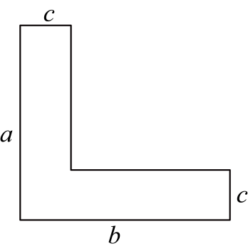
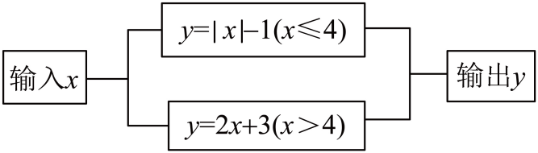

专题3.1 代数式（举一反三讲义）
【北师大版2024】

【题型1 用字母表示运算或数量关系】 2
【题型2 识别代数式】 2
【题型3 代数式的书写方法】 3
【题型4 代数式的意义】 3
【题型5 列代数式】 4
【题型6 已知字母的值求代数式的值】 5
【题型7 已知式子的值求代数式的值】 5
【题型8 程序流程图中求代数式的值】 5
【题型9 规律型：数字的变化类】 6
【题型10 规律型：图形的变化类】 7
 知识点1 用含字母的式子表示数
知识点1 用含字母的式子表示数
用字母或含有字母的式子表示数和数量关系，为我们今后的学习和研究带来了极大的方便．
用含字母的式子表示数的书写规则：
（1）字母与字母相乘时，“×”号通常省略不写或写成“⋅”；
（2）字母与数相乘时，数通常写在字母的前面；
（3）带分数与字母相乘时，通常化带分数为假分数；
（4）字母与字母相除时，要写成分数的形式．
（5）当式子为几个数的和或差的形式，且结果带单位时，式子整体加括号．
知识点2 代数式的概念
用运算符号把数或表示数的字母连接起来的式子叫作代数式．单独的一个数或字母也是代数式．例如：0，a都是代数式．
知识点3 代数式的意义
根据生活实际将给定的代数式的意义用语言叙述出来，就是将代数式的字母及运算符号赋予具体的含义．
知识点4 列代数式
把简单的与数量有关的词语用代数式表示出来叫作列代数式．例如：用代数式表示：a与a减去b的差的商，其中运算词“差”表示的数量关系是a减去b，列成式子为a-b；运算词“商”表示的数量关系是a除以“差”，即aa−b（填完整的代数式）．
知识点5 代数式的值的概念
用数值代替代数式中的字母，按照代数式中的运算关系计算得出的结果，叫作代数式的值．这个过程叫作求代数式的值．例如：当x=−5时，代数式(x+2)2=(−5+2)2=(−3)2=9，那么9就是当x=−5时，代数式(x+2)2的值．
知识点6 求代数式的值的步骤
求代数式的值有代入和计算两步．
第一步：用数值代替代数式里的字母，简称“代入”．代入时，将相应的字母换成已给定的或已算出来的数值，其他的运算符号、原来的数字及运算顺序都不改变．
第二步：按照代数式中给出的运算，计算出结果，简称“计算”．代入的值不同，最后计算出的结果也可能不同．
【题型1 用字母表示运算或数量关系】
【例1】一个没有关紧的水龙头一天滴水约0.09 m3，n个这样的水龙头一天滴水约 m3．
【变式1-1】用−a表示的数一定是（ ）
A．负数 B．正数或负数 C．0或负数 D．以上全不对
【变式1-2】一个两位数，十位上的数字是5，个位上的数字是a，则这个两位数是
【变式1-3】n是任意整数，我们常用2n表示偶数，由此想到奇数可以表示为 ，比2n小的最大奇数为 ．
【题型2 识别代数式】
【例2】（24-25七年级上·河南南阳·期末）在式子n−3、a、1、80%t、S=ab中，代数式的个数有（ ）
A．2个 B．3个 C．4个 D．5个
【变式2-1】（24-25六年级上·上海普陀·期末）下列各式中，不是代数式的是（ ）
A．x=1 B．5 C．2a2+1 D．x−2y+3
【变式2-2】（24-25七年级上·安徽淮南·期中）下列数与式子：①2x−y+1 ②1a+1b ③2x+1=3 ④3>2 ⑤a ⑥0其中是代数式的是（填序号） ．
【变式2-3】若将代数式中的任意两个字母交换，代数式不变，则称这个代数式为完全对称式．如a+b+c就是完全对称式．下列三个代数式：①a−b2；②ab+bc+ca；③a2b+b2c+c2a．其中是完全对称式的是 ．（填写序号）
【题型3 代数式的书写方法】
【例3】下列各式中，符合代数式书写规则的是（ ）
A．x×5 B．12xy C．mn2 D．m÷n
【变式3-1】进入初中后学习数学，对于代数式书写规范，教材中指出：“在含有字母的式子中如果出现乘号‘×’ ，通常将乘号写作‘• ’或者省略不写”.其实还有一些书写规范，比如，在代数式中如果出现除号“÷”，通常用分数线“—”来取代；数字与字母相乘时，一般数字写在前面，根据以上书写要求，将代数式(ac×4−b2)÷4简写为 ．
【变式3-2】下列各式：①113x②2000x③4−b÷c ④m2−n26 ⑤x−y千克 ，不符合代数式书写要求的是（ ）
A．5个 B．4个 C．3个 D．2个
【变式3-3】将下列各式按照列代数式的规范要求重新书写：
（1）a×5，应写成 ；
（2）S÷t应写成 ；
（3）a×a×2−b×13，应写成 ；
（4）143x, 应写成 .
【题型4 代数式的意义】
【例4】（24-25七年级上·河北石家庄·期中）甲、乙同学关于“代数式2x+y”的意义叙述，判断正确的是（ ）
甲：x的2倍与y的和；
乙：苹果每千克x元，香蕉每千克y元，苹果和香蕉各买2千克的总花费
A．只有甲的正确 B．只有乙的正确
C．甲、乙的都正确 D．甲、乙的都不正确
【变式4-1】对于式子“m+n”可以赋予实际意义：一个篮球的价格是m元，一个足球的价格是n元，体育老师购买一个篮球和一个足球共需要付款m+n元，请你对式子“2a”赋予一个实际意义： ．
【变式4-2】请仔细分析下列赋予3a实际意义的例子中不正确的是( )
A．若葡萄的价格是3元/千克，则3a表示买a千克葡萄的金额，
B．若3和a分别表示一个两位数中的十位数字和个位数字，则3a表示这个两位数：
C．若一个人骑自行车的速度为a千米/时，则3a表示他3小时骑行的路程，
D．若a表示一个等边三角形的边长，则3a表示这个等边三角形的周长.
【变式4-3】对单项式“0.75m”可以解释为：一件商品原价m元，若按原价的七五折出售，这件商品现在的售价为0.75m元．某超市的苹果价格为39元/斤，则代数式“50−3.9x”可表示的实际意义 ．
【题型5 列代数式】
【例5】若x表示一个两位数，y也表示一个两位数，小明想用x、y来组成一个四位数，且把x放在y的左边，你认为下列表达式中哪一个是正确的（ ）
A．yx B．x+y C．100x+y D．100y+x
【变式5-1】一台电视机成本价为a元，销售价比成本价增加了25%，因库存积压，所以就按销售价7折出售，那么每台的实际售价为 元．
【变式5-2】（24-25八年级下·河北保定·阶段练习）某校组织全体师生m人到革命圣地野三坡进行研学活动，租车公司提供的车每辆能乘坐n人，宋老师发现除自己外，其他人刚好能将座位坐满，则学校从租车公司共租用车辆（ ）
A．m+1n辆 B．m−1n辆 C．mn+1辆 D．mn−1辆
【变式5-3】（24-25七年级下·江苏镇江·期中）图为“L”型钢材的截面，要计算其截面面积，下列给出的算式中，错误的是（ ）

A．ab−c2 B．ac+b−cc
C．bc+a−cc D．ab−b−ca−c
【题型6 已知字母的值求代数式的值】
【例6】（24-25七年级上·全国·随堂练习）已知a=−2,b=1,c=−3，求整式−a2+b2+c2+2ab−2ac的值．
【变式6-1】（24-25七年级上·广东东莞·期末）当a=8，b=4时，代数式ab2−b2a的值为（ ）
A．62 B．63 C．126 D．1022
【变式6-2】（24-25七年级上·广东江门·阶段练习）如果a=3,b=13，且ab>0，那么a−b的值是（ ）
A．10或−16 B．16或−16 C．10或−10 D．−10或16
【变式6-3】（24-25七年级上·湖南湘西·阶段练习）已知式子aa+bb+abab的最大值是m，最小值是n，则式子9m−n2= ．
【题型7 已知式子的值求代数式的值】
【例7】（24-25七年级上·河北唐山·阶段练习）若x2+3x的值为7，则3x2+9x−2的值为（ ）
A．19 B．24 C．39 D．44
【变式7-1】（24-25九年级上·云南昆明·阶段练习）若x2−3x的值是9．那么代数式x2−3x−1的值是 ．
【变式7-2】（24-25七年级上·甘肃张掖·期末）已知a−b=−2，则代数式4a−b2+a−b的值为 ．
【变式7-3】（24-25七年级上·河北沧州·期末）如图，约定：上方相邻两数之和等于这两数下方箭头共同指向的数，则：x+y的值为 ．

【题型8 程序流程图中求代数式的值】
【例8】（24-25七年级上·四川达州·期末）有一个数值转换器，原理如图所示，若开始输入x的值是5，可发现第1次输出的结果是16，第2次输出的结果是8，第3次输出的结果是4．依次继续下去，第2025次输出的结果是（ ）

A．8 B．4 C．2 D．5
【变式8-1】（2025·四川达州·二模）如图是一个运算程序示意图，若开始输入x的值为5，则输出y值为 ．

【变式8-2】（24-25七年级下·内蒙古乌海·期末）按如图所示的运算程序，能使输出的结果为18的是（ ）

A．x=3，y=2 B．x=2，y=3 C．x=3，y=−2 D．x=2，y=−3
【变式8-3】按如图所示的程序计算，当输入数据x，y的值满足x+2+3−y2=0时，m的值为 ．
【题型9 规律型：数字的变化类】
【例9】（2025·云南昆明·模拟预测）按一定规律排列的代数式：−x+2y,x3+4y,−x5+6y,x7+8y,−x9+10y,x12+12y,⋅⋅⋅，第n个代数式是（ ）
A．−1nx2n+1+2ny B．−1nx2n−1+2ny
C．−1n+1x2n+1+ny D．−1n+1x2n−1+ny
【变式9-1】（24-25七年级上·全国·期末）观察下列各式：−2，4，−8，16，−32，⋅⋅⋅根据其中的排列规律，则第n个式子为 ．
【变式9-2】（24-25七年级上·甘肃武威·期末）一组按规律排列的式子：a23,−a35,a47,−a59,⋯，则第2025个式子是 ．
【变式9-3】将偶数按下列方式排成一个三角形数阵，按照此规律，第10行第5个数是 ．

【题型10 规律型：图形的变化类】
【例10】（24-25九年级下·云南·阶段练习）下列图形都是由同样大小的小圆圈按一定的规律组成，其中，第①个图形中一共有5个小圆圈，第②个图形中一共有7个小圆圈，第③个图形中一共有9个小圆圈……，按此规律，第⑧个图形中小圆圈的个数为（ ）

A．15 B．17 C．19 D．21
【变式10-1】（24-25七年级上·甘肃张掖·期末）小明用边长为1cm的小正方形纸片在桌面上摆放成如图所示的塔状图．第n（n是正整数）个塔状图的周长为 cm（用含n的代数式表示）．
【变式10-2】（24-25七年级上·河北石家庄·期中）如图是一组有规律的图案．第1个图中有4个小黑点．第2个图中有7个小黑点，第3个图中有12个小黑点．第4个图中有19个小黑点．…、按此规律，第9个图中有 个小黑点，第n个图中有 个小黑点．（用含n的代数式表示）

【变式10-3】（24-25七年级下·广东梅州·期末）如图，用大小相同的小正方形拼图，第1个图是一个小正方形，第2个图由9个小正方形拼成；第3个图由25个小正方形拼成，依此规律，则第n个图由 个小正方形拼成．